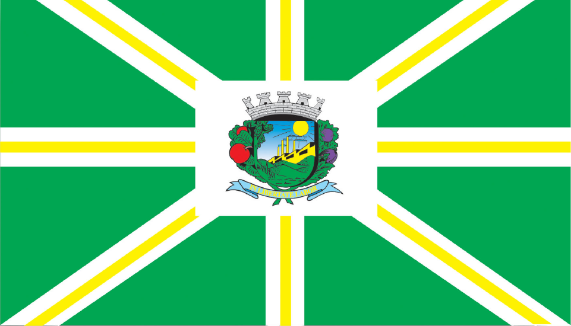

Meu torrão natal!
Valinhos,
Terra sem igual!
À sombra da Bandeira,
Tu te ergues altaneira,
Em busca de um ideal!
Terra do figo roxo,
Vales e montes mil;
Ergue-se um colosso,
Num gesto, a mão gentil!
Terra das belas artes,
Fontes e encantos mil;
Teu povo bandeirante
Inspira amor febril!
Qual Éden de Deus presente,
Pedacinho reluzente
Do meu imenso Brasil!